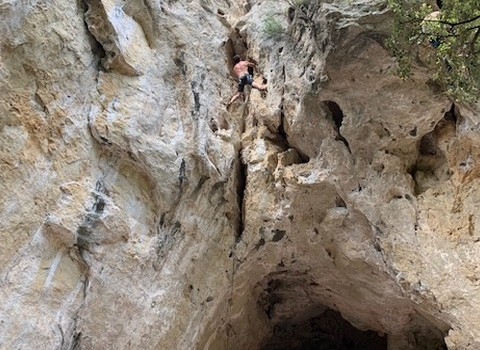

La falaiseLe Saint Graal de tout grimpeur : toucher du caillou. Nous nous entrainons chaque semaine (souvent en salle artificielle) pour performer durant les sorties falaises (ou bloc en extérieur). Cela nécessite plus de temps qu'en intérieur (souvent une journée entière) mais la sortie est beaucoup plus belle. Nous partons entre amis pour sortir les plus belles voies, accompagnés de bières et de sandwichs. |
 |
Esacalade au FenouilletLe Fenouillet est à 10 min de ma maison. Le site du Fenouillet est propice à la découverte, l’initiation et la performance de l’escalade. Dame nature a façonné des îlots rocheux noyés dans un océan de verdure au charme tantôt bucolique, tantôt sauvage. Il y en a pour tous les niveaux. C'est une sortie que je réalise souvent avec des amis qui débutent. Et en ces temps de covid, quand les salles sont fermées, j'y vais jusqu'à 2 fois par semaine. |
Une passionJe pratique l'escalade depuis plus de 10 ans maintenant et je ne m'en lasse pas ! PS : On peut voir ici une belle image de parade en bloc naturel (je suis un peu en stress sur cette photo) |